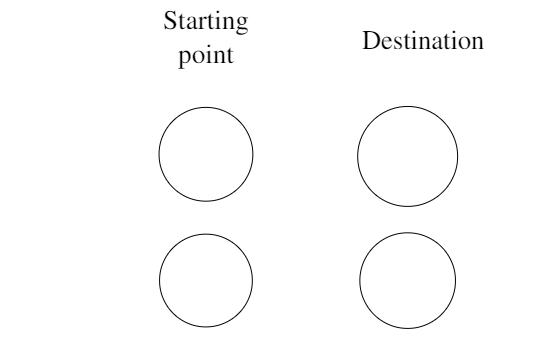
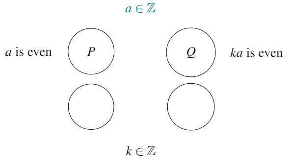
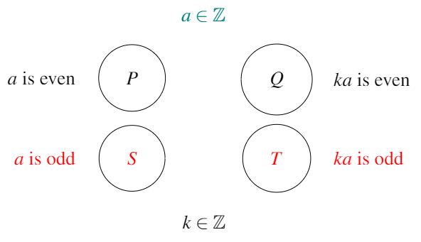

Chapter 8 Proving a conjecture
So far we have seen that axioms are statements which can’t be proved, because they are so fundamental. Axioms (and the even more fundamental definitions) are statements which allow us to talk about and do mathematics.
Exercise 8.1 Here are four more axioms. All of these axioms are about probability. How many of these have you heard about or used before?
- The probability of something happening is a non-negative, real number.
- The probability of something happening is never greater than 1.
- The probability that at least one of the possible events will happen is 1.
- The sum of the probabilities of all possible events is 1.
Any mathematical statement that is not an axiom or a definition and that we’re interested in proving or disproving can be reclassified a conjecture. We can then attempt to prove it or disprove it. Follow these steps when meeting a new conjecture…
8.1 Step 1: Start by looking for a counterexample
When beginning with a new conjecture, you (probably) don’t know whether it’s true or false. Therefore, your first step should always be to look for a counterexample. We saw in the last chapter that to disprove a false statement, we just need to find a single counterexample to disprove it.
If you find one, then you have disproved the conjecture, and don’t need to worry about trying to prove it (as you know it’s false!). If you don’t find one, it doesn’t mean there isn’t one, but at least you tried.
Looking for a counterexample is also a good place to begin with a new conjecture because it helps you to understand what the conjecture is saying.
How long should you look for a counterexample?
I would suggest trying out four or five examples to see if any of them are counterexamples.
Exercise 8.2 Try to find a counterexample of the following conjectures. I’m not promising that they are all false so it might be that a counterexample doesn’t exist for some of them.
- Multiples of \(4\) are divisible by \(8\).
- For two real numbers \(a\) and \(b\), \(|a||b| = |ab|\).
- Every whole number greater than \(2\) can be written as the difference of two perfect squares. (For example, \(11 = 36 - 25, 12 = 16 - 4, 13 = 49 - 36\).)
- Every positive odd number can be written as the difference of two perfect squares.
- All triangles contain at least one angle measuring \(\geq 60^{\circ}\).}
- All triangles contain at most one angle measuring \(\geq 60^{\circ}\).
*Hint: Being creative when trying to find a counterexample will increase your chance of finding a one (if it exists). For example, with the second conjecture, try an example where \(a\) and \(b\) are both positive, then an example where \(a\) and \(b\) are both negative. Then you could try an example where \(a\) and \(b\) have different signs, then an example where one or both of \(a\) and \(b\) are equal to zero.
Keeping going until you think you’ve tried all possible “types” of example. Obviously stop if you find a counterexample.*
If you fail to find a counterexample, maybe the conjecture is true. Or maybe you just weren’t able to find a counterexample, even though one (or more) exists.27 Because we don’t know which, we move onto Step 2…
8.2 Step 2: Try to build a proof
We don’t know if the conjecture is true or false, but our attempts to disprove it by finding a counterexample failed. Our next step is to attempt to build a proof.
If the conjecture is true, we should be able to construct a proof to show this. If it is actually false, then as we build our proof we will find it breaks somehow. This would be called a disproof. Whilst finding a disproof is sufficient in showing the conjecture to be false, the disproof might make it easier to find a counterexample to the conjecture.
Note
When trying to build a proof, be optimistic and believe that the conjecture is true.
Expecting the proof to fail is not a good mindset for effective proof building!
There are many different methods of proof we could build, and our choice will depend on the type of conjecture. We might have to try out several of the methods before we find the one that works. Also, different people might use different methods for the same conjecture. That’s fine. As long as they both come to the same conclusion about the conjecture’s truth value, the method used isn’t important.
8.2.1 If…then…
No matter what method you decide to start with, make sure the conjecture is in the form If … then …. If the conjecture is not in this form, rewrite it so that it is.
Why is the If … then …. form so important? The ‘if’ part signals the conjecture’s starting point, and the ‘then’ part signals the conjecture’s destination. It means we know where to begin our proof, and where we’re headed whilst we’re building the proof.
Example 8.1 Multiples of even numbers are even.
Rewritten in the If … then … form, this conjecture becomes “If \(a\) is an even number, then \(ka\) is even, where \(k \in \mathbb{Z}\)”.
We use the letter \(P\) to indicate the starting point of a conjecture, and the letter \(Q\) to indicate the destination. So for the above conjecture:
Here are some more examples, taken from Exercise 6.1.1. The original conjecture is on the left, and the If … then … form on the right:
\(P\): \(a\) is an even number
\(Q\): \(ka\) is even, where \(k \in \mathbb{Z}\)
| Original conjecture | If … then … |
|---|---|
| All prime numbers are odd | If \(p\) is prime, then \(p\) is odd |
| \((a + b)^2 = a^2 + b^2\) for any numbers \(a\) and \(b\) | If \(a\) and \(b \in \mathbb{R}\), then \((a + b)^2 = a^2 + b^2\) |
| All sheep in South Africa are white | If a sheep lives in South Africa, then it is white |
| The national flags of all UN members are rectangular | If a country is a UN member, then its flag is rectangular |
| All numbers are either positive or negative | If \(a \in \mathbb{R}\), then \(a\) is either positive or negative |
| \(a^2 > a\), where \(a\) is a whole number | If \(a \in \mathbb{Z}\), then \(a^2 > a\) |
Exercise 8.3 For each example above, what is \(P\)? What is \(Q\)?
Exercise 8.4 For each of the six conjectures from Exercise 8.2:
- Rewrite them in the If … then … form.
- What is \(P\) for each? And \(Q\)?
8.2.2 Draw the map
Once the conjecture is in the form If … then …, you should attempt to draw the conjecture’s map.
It’s not always possible to draw a conjecture’s map, but if you’re able to it can really help you choose the most appropriate method of proof for that conjecture.
Here’s the format of a conjecture map:

Notice we start on the left side of the picture and finish on the right.
Next, we add \(P\) and \(Q\). We’ll use the conjecture from above, “If \(a\) is an even number, then \(ka\) is even, where \(k \in \mathbb{Z}\)”.

You can see that \(P\) has been added to the left side of the map and \(Q\) to the right side. Above the map we write what type of number we’re considering, in this case integers. Below the map, we write details of any variables (e.g. \(k\)) that the conjecture uses.
Next we add the opposite of \(P\) and the opposite of \(Q\) to the map.
What does the opposite mean? Well, in the example above, the numbers we’re considering are the integers. We put the even ones in \(P\), and all those which are not even (so odd) in \(S\) (see below).
Similarly, if you multiply an integer \(a\) (even or odd) by another integer (\(k\)), the result will be another integer. The even \(ka\) we’re storing in \(Q\), and the odd \(ka\) will go into \(T\).

Finally, we add arrows to the map to represent what the conjecture is saying. Arrows can only go from the left side of the map to the right side.
Therefore, the conjecture map of the statement “multiples of even numbers are even” is:

This can all seem really confusing, but trying to draw a couple of conjecture maps yourself will really help.
Exercise 8.5 Draw the conjecture map for the following conjectures.
- The square of a prime number is also prime.
- Integers retain their parity when squared.
- The sum of two consecutive integers is odd.
- Numbers retain their sign when cubed.
Exercise 8.6 Draw the conjecture map of the conjecture from Exercise 8.2 (a), (c) and (d).
Exercise 8.7 Why is it difficult to draw a conjecture map for Exercise 8.2 (b), (e) and (f)?
8.2.3 Choose your method
Once you have written the conjecture in the form “If … then …” and have attempted (hopefully successfully) in drawing its map, you are ready to begin to try building a proof.
We have lots of choices of methods of proof available. In this course, we’ll look at:
- proof by exhaustion,
- direct proof,
- proof by cases,
- proof using previously proved or disproved conjectures,
- proof via the contrapositive,
- proof by contradiction, and
- proof by induction.
Each of chapters 10 - 16 will cover one of these methods, and give you some examples to practice on.
At the end of each chapter there will be some more conjectures to work on. These conjectures might be true or might be false. To prove the true ones, you will be expected not just to rely on the method introduced in that chapter, but all previous methods too. This is because the challenge (and fun) of proving conjectures comes from not knowing where to start and feeling your own way to a proof. It’s a very satisfying experience!28
Chapter 17 is a bonus chapter, and covers the incompleteness of mathematics.
The next chapter, chapter 9, looks at what makes a good proof.
This could be for a number of reasons, such as the the counterexample(s) are really really big, or maybe because you forgot to check all types of examples. Also, maybe you were just unlucky.↩︎
Also, when presented with a set of conjectures and told to “Prove using a direct proof…” or “Prove by induction…”, like a robot you will switch your brain off and switch on your autopilot, which we don’t want!↩︎